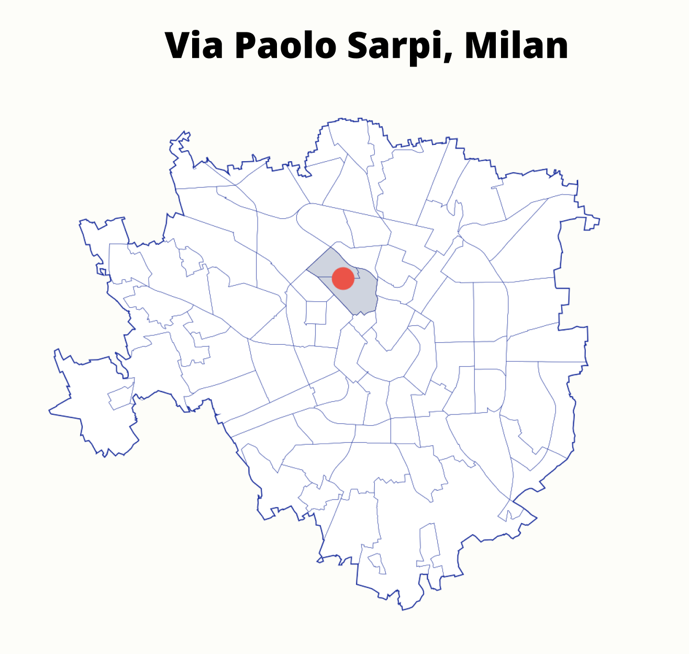
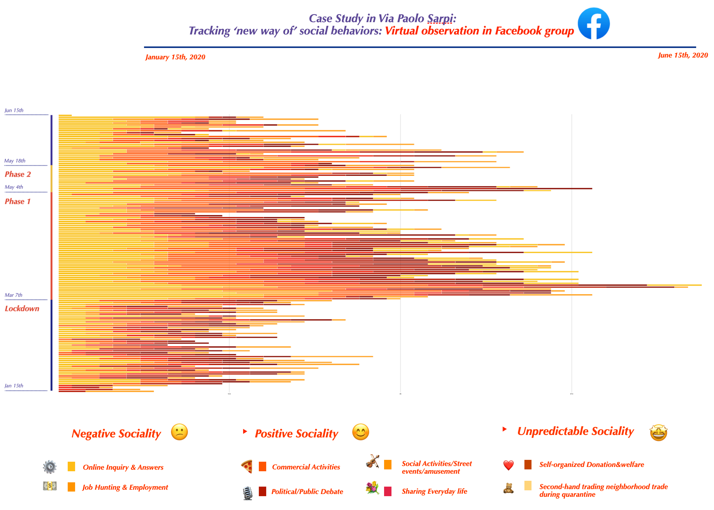
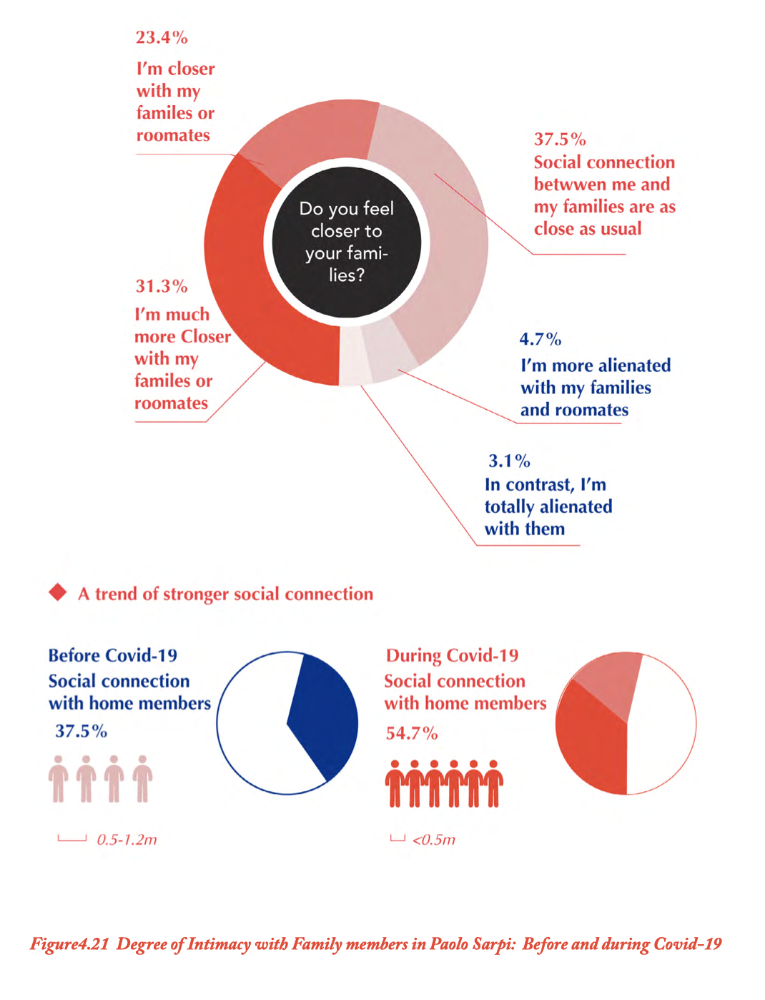
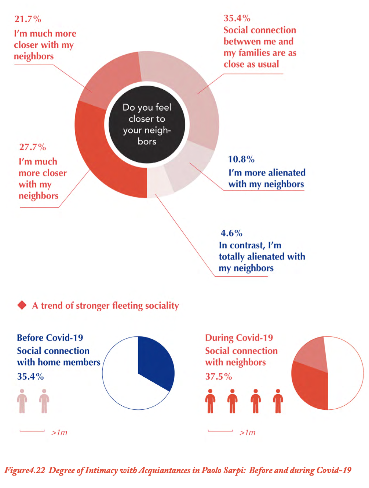
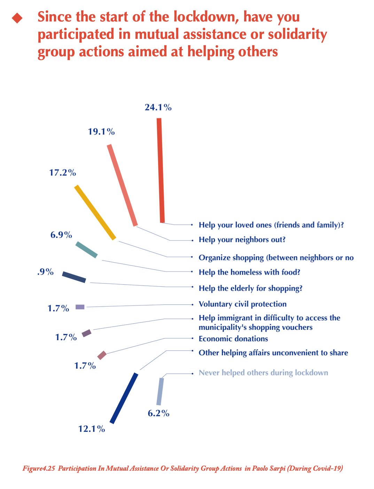
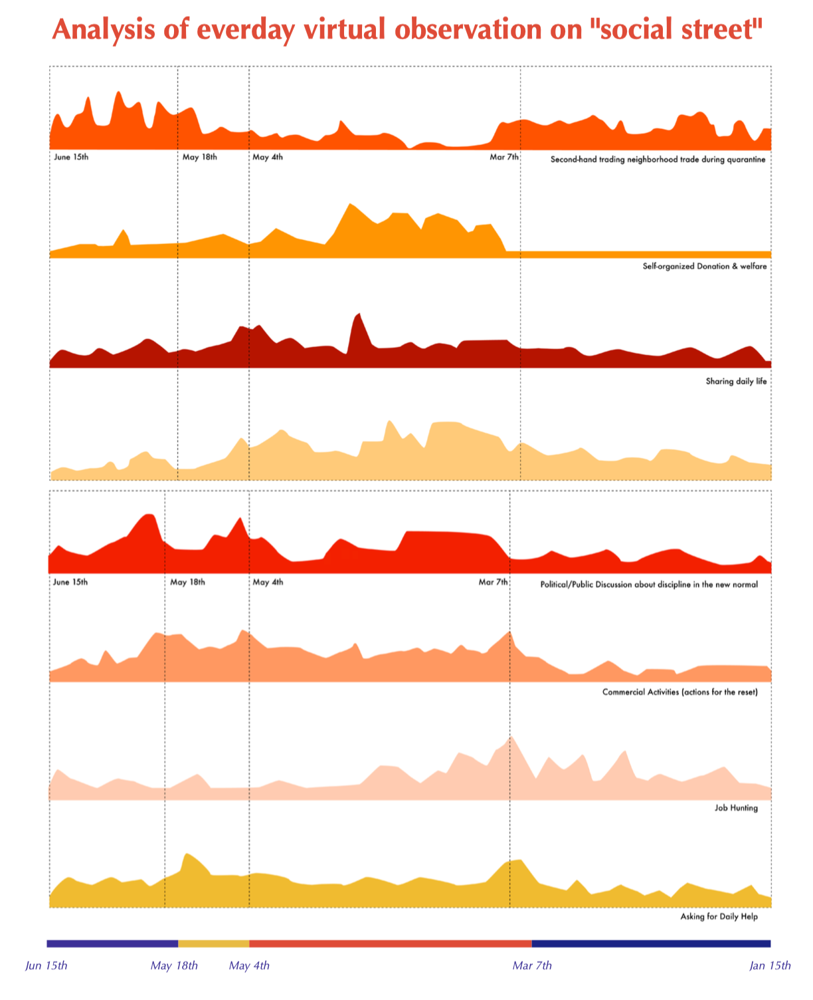
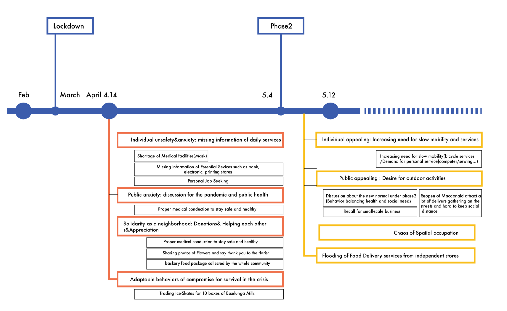
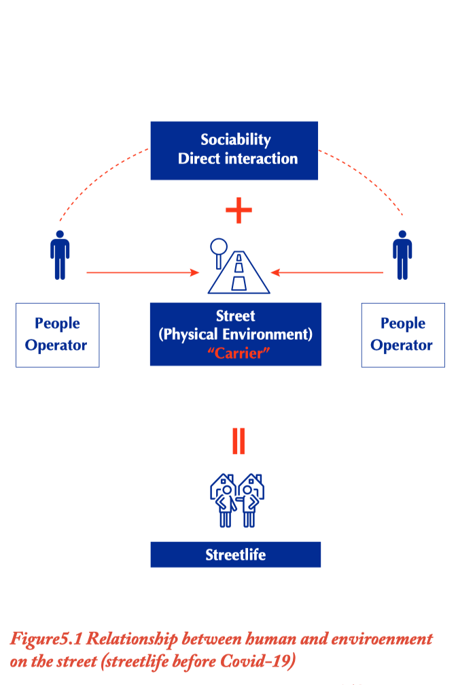
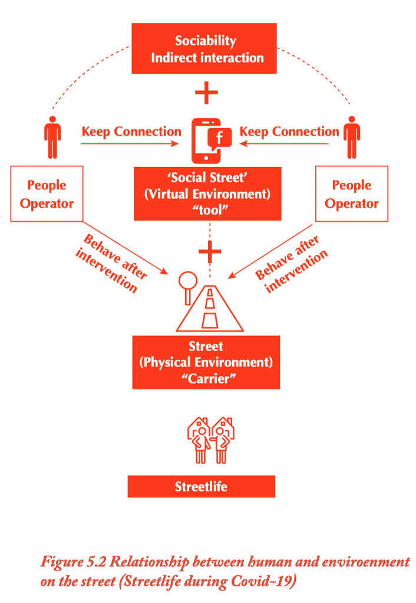
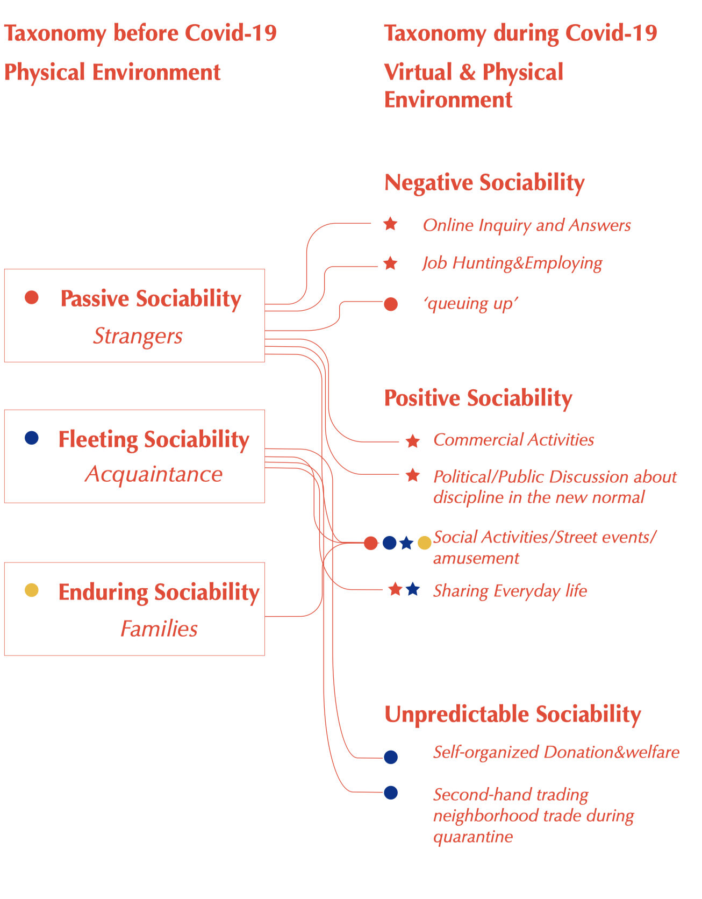

This research investigates "self-evolving social behaviors" by examining how geographically community-based online platform influences these behaviors physically. It focuses on the reshaping of social interactions both online, through platforms like Facebook, and offline in physical settings. The study introduces a novel theoretical framework to illustrate these behavioral changes, employing dual perspectives—digital (online) and physical (offline) public domains. This approach analyzes the composition of street life users, the typology of social behaviors, and the characteristics of physical street environments.
Role
Researcher, Designer
institution
Politecnico di Milano, Tongji University
year
2018-2021
KEY WORDS
Social Behaviors, Behavioral Science, Public Space, Online and Offline
Deliverables
Master Thesis (Supervisor: Prof. Mario Paris)
KEY methodologies
Literature Review, Theoretical Deduction, Empirical Research, Semi-Structured Interviews (Qualitative), Diary Studies and data analysis on Facebook(Qualitative)
relevant publications
3
* Independent project (Master Thesis)
background
"Impact of online platform on
social behaviors in public space"
Since the 19th century, the development of new media technologies has transformed social interactions and the use of urban public spaces. Web 2.0 technologies have facilitated the emergence of "virtual communities" through platforms like BBS, social media, and online chat rooms, leading to a shift towards anonymity, personalization, and flattened social hierarchies. Research indicates that behaviors in these online public spaces closely resemble those in physical spaces, including spontaneous group organization, cultural exchanges, self-presentation, and emotional communication. The COVID-19 pandemic in 2020 further accelerated social interactions in virtual communities, posing challenges to urban public spaces under the "New Normal."

As the pandemic altered social behaviors, data showed significant increases in online activity, with Facebook usage rising by 27% and streaming platforms like Netflix and YouTube seeing similar growth. The pandemic has also changed how public spaces are utilized, revealing issues like insufficient pedestrian areas and unequal distribution of public space.
research question
"New modality of social behaviors:
online & offline association"
In the global context of the social behavioral changes relying on online platform, The study aims to explore new theoretical models of online-offline-associating social interactions. The empirical study examines Via Paolo Sarpi, a typical public community in Italy, and its geographically developed online platform, local new media community known as "Social Street." It explores how online public domain has intervened in, enriched, and transformed traditional modes of social behaviors and spatial usage. This study will serve as a case for understanding the integration of "virtual" and "physical" social behaviors, providing insights into civic participation and service strategies.
"Why Via Paolo Sarpi?"
We chose to study the impact of these measures on the Paolo Sarpi district near Milan's historical core. This vibrant, multiethnic area is characterized by its unique identity and quality urban landscape. Serving as the main street of Milan's Chinatown, it features independent Chinese shops and restaurants and is home to both Italians and second- or third-generation migrants. The pedestrian area, established in 2010-2011, fosters cultural interactions and supports a dynamic local economy driven by Chinese entrepreneurs. Unlike other semi-central neighborhoods, Paolo Sarpi is lively 24/7, creating a distinct identity that encourages social gatherings.Additionally, the "Paolo Sarpi Social Street" (PSSS) on Facebook has connected over 14,000 residents since 2010, promoting social ties and sharing local information. This group has maintained community engagement throughout the pandemic, helping to combat isolation and loneliness. Our research aims to explore these interactions and leverage our cultural and language skills to engage with the area's diverse communities.

methodology and approach
In his studies, Vikas Mehta used walk-by observations to analyze the pattern of sociability on the streets. In the past urban studies, this methodology was the most widely used as a fundamental tool (Bechtel et al., 1987). It’s an efficient way to collect behavioral characteristics on social interaction that is visible in the physical environment (Francis, 1984; Marcus & Francis, 1997; Whyte, 1980). Thanks to this technique, Mehta structured direct observations to record the details of all types of social behaviors (Mehta, 2007, 2014; V. Mehta & Bosson, 2010). Through direct observation, we recorded the intensity and the contents of new-born social behaviors in Paolo Sarpi during COVID-19. It lasts from January 15th to June 15th in 2020. The data were collected comparatively from the period before COVID-19 (January 15th -March 10th) to the quarantine during COVID-19 (March 10th-June 15th).

The online survey
We designed the interview questions to capture the changes people think about their social life. The data were collected from May 10th to June 15th, after the first month of lockdown. We asked people to consider what they valued on the street, with whom they would love to keep social interaction, their rapid responses since the lockdown, and their future expectations for Paolo Sarpi and the built environment. The survey included 65 respondents. 86.6% are the local dwellers, 12.3% who don’t live in the neighborhood but have been interested in Paolo Sarpi. Nearly half of the respondents are from the age of 37–55 (47.7%), 27.7% are young people from the age of 25–36, and 18.5% are old and retired people over 56 years old. The result was a behavioral map to explore the relationship between behaviors and environmental characteristics (Ittelson, 1970). For testing their social relationships, the investigation examines if and how they change their relations regarding passive, fleeting, and enduring sociability. We asked about their feelings of social life before and during the lockdown, and about their concerns with family members or people with whom they share spaces. Besides, the survey keeps questioning if they were feeling closer to their neighbors and if they knew more people during a lockdown or not. We asked if they enlarged their social circle beyond the neighborhood with the platform of social media. The result of the survey indicates that behaviors fastly changed to survive and maintain the social interaction in the emergency of crisis, which is natural humanity, unforeseen by urban planners (Masten & Motti-Stefanidi, 2020; Nitschke et al., 2020). As illustrated in Paolo Sarpi, human resilience represents the human spirit in times of struggle or catastrophe (Peters, 2020).

The semantic analysis of online interactions in the “Paolo Sarpi Social Street” Facebook group
The direct observation of virtual interactions recorded a sample of 3,534 events of sociability from January 15 th to June 15 th on the PSSS group, posted by neighbors, local companies, shop tenants, and local associations. We focused on several keywords that show the attitude and the aims of each event and/or interaction to define the quality of the exchanges raised through this media. Through the virtual observation of the activities of neighbors on Facebook, we could track the ongoing social behaviors and remedy the limitation of conventional physical observation. “Paolo Sarpi Social Street” established a robust digital infrastructure and has been more activated than ever. The online platform provides new opportunities for sociability and, to some extent, replaced the suspended social activities that happened physically. Residents and neighbors have been keeping their daily connection and cooperation in the neighborhood.
THeoretical Framework
Behavioral Model:
Taxonomy of Social Behaviors
Taxonomy of Social Behaviors: Basic Framework
A stratified model of sociability on the street is conceptualized. There are two models comparatively illustrating each other for examining the changes before and during Covid-19. The first model before Covid-19 (Figure 47) indicated the intimacy of social relations and the proportion of activities on the street. It's significant to underline that these sociabilities that operating streetlife depend, to a large extend, on social relations among the street users. Passive sociability that predominantly contains strangers and behavior of 'being-alone' occupied the most of participants on the street. Street serves plenty of people who accidentally passing by and stop for a while by the attractions that make them relaxed, pleased, and comfortable.

Three types of social behaviours


A Hypothesis: the “new Modality of Social Behaviors”with the Intervention of Online platform
A hypothetic model is proposed picturing the scenario during Covid-19 based on the first one. In the moment of lockdown, physical contact is blocked and commercial, leisure, shopping activities is suspended. The street has lost most of it's original carrier for supporting social interaction. However, with the help of social media, strangers belonging to passive sociability peripheral stratification expand hugely from neighborhood-united to global distribution. Fleeting Sociability describes the short contact among acquaintances is probably also enlarged due to booming behaviors of neighbors helping and donating. Enduring sociability, in this case, seems to become shrinkage in contrast of the others because intimate groups such as friends and family members have no way to stay for a long time for communicating, eating or enjoying the street as usual before of the lockdown.


empirical research
Case Study of Via Paolo Sarpi

A Diverse neighborhood, a Participative Civic Space
Walking for Paolo Sarpi today is a pleasant experience, more than making the pools in Montenapo. It is full of the classic Milanese ladies from Sciuragram, they drink coffee in the many bars of the street, a stretch is pedestrianized, where some taxis pass, in addition to the many bicycles (at reduced speed) driven by Chinese who use them as station wagons, loaded with bulky boxes and parcels resting on wooden luggage racks. Italian mixes with Chinese in an impossible but musically pleasant language. A world slipped into another world and which coexists in total normalcy.
A pedestrian-friendly street
The pedestrian zone of Via Paolo Sarpi was inaugurated in 2011, being refurbished by an urban redevelopment intervention, carried out with a stone repaving combined with an ornament of flower beds and trees that created a pedestrian path, the main artery of the Chinese district Milan has suddenly become one of the trendiest areas of the city .The result is today's Chinatown in Milan, not without problems, but restored and more "melting pot" than in other cities. If not, the numbers would also be different. Milan is first with 5,620 Chinese sole proprietorships, 11 percent national, up 38 percent in six years and 2 percent in a year.

Online Platform: "Social Street" & Facebook Community
Social Streets are groups of neighbors who want to recreate convivial ties having noticed a weakening of social relationships in their roads of residence. Social Streets start as online Facebook groups to materialize in offline encounters, using conviviality to create virtuous bonds. These are carried out through practices of sociality, inclusive and for free. The main focus of this article is analyzing sociodemographic data of the “Streeters” and of the neighborhoods to understand where they produce conviviality in urban neighborhoods. Through conviviality, Social Streets produce a sense of attachment and can represent a good tool to fight isolation and loneliness in the urban setting.

What do you think of your social life on Via Paolo Sarpi? before and during the lockdown?

"About you and your families and roommates who live together with you, do you feel closer to them or not? (On a scale of 1 to 5, where 1 means totally alienated and 5 means totally closed)"

"About you and your previous acquaintances on via Paolo Sarpi(neighbors, your familiar store-owners or customers...) (On a scale of 1 to 5, where 1 means totally alienated and 5 means totally closed)"

"Since the start of the lockdown, have you participated in mutual assistance or solidarity group actions aimed at helping others?"
"Since the start of the lockdown, have you participated in mutual assistance or solidarity group actions aimed at helping others?"

Investigating social relations transformed By online Platform
For firstly illustrating the hypothetic model, the investigation would examine the relationship between people and their related individuals. They were asked about their feelings of social life before and during the lockdown. They were asked what did they think about their relations with their family members or roommates who share a same 'home'. They were asked if they were feeling closer to their neighbors that they were familiar with, and if they knew more neighbors during lockdown or not.

Transformation Online:
Data Collection of Social Behaviors
in Facebook Group of Paolo Sarpi
6576 Online Social Behaviors Observed And Adapted To Taxonomy
The Facebook establishment of "Social Street" proved effective during quarantine, as it replaced suspended physical activities and enabled residents to maintain daily connections. Social interactions on the platform were more active than paralyzed compared to physical spaces, offering valuable opportunities for tracking daily sociality and observing how behaviors transformed during the pandemic.
Data Collection & Analysis
The investigation revealed distinct sociabilities on Via Paolo Sarpi. Virtual observations from January 15 to June 15 analyzed key time points since the lockdown, recording the intensity of behaviors across four phases. Notably, all activities sharply increased following the lockdown in March.

Data Analysis
We designed the interview questions to capture the changes people think about their social life. The data were collected from May 10th to June 15th, after the first month of lockdown. We asked people to consider what they valued on the street, with whom they would love to keep social interaction, their rapid responses since the lockdown, and their future expectations for Paolo Sarpi and the The transition will be analyzed in four phases. First, from January 15 to March 3, social interactions and street life before the pandemic are observed. Second, from March 7 to May 4, the initial lockdown erased leisure and physical interactions, severely impacting street businesses. During this period, Facebook activity thrived, with increased commercial promotion, job hunting, and public discussions, as users shared optimism and daily beauty. Lastly, from May 4 to May 18, certain restaurants and essential businesses began to reopen.

A Potential Transition
In the fourth period, from May 18 to June 15, most street businesses reopened, but many small businesses on Paolo Sarpi remained closed. Virtual interactions on Facebook declined, political discussions quieted, and second-hand trade revived, focusing on items like furniture, books, and clothes rather than urgent necessities.

Transformation of space:
Changing pattern of spatial occupation on the streets
With these consideration, When it comes exactly to space street itself, how had people been occupying the different zones on the streets and how is the occupation being transformed? Vikas Mehta found a hidden pattern in this micro-perspective of how people use to deal with With these consideration, When it comes exactly to space street itself, how had people been occupying the different zones on the streets and how is the occupation being transformed? Vikas Mehta found a hidden pattern in this micro-perspective of how people use to deal with being transformed? Vikas Mehta found a hidden pattern in this micro-perspective of how people use to deal with being transformed?

The occupation of zones, in Parlo Sarpi could present as a slightly different way on the basis of theory of Vikas Mehta. Wide pedestrian free zone is shared by walking and cycling mobility, and sometimes delivery cargos as well. Zone2 with the street front creases a pure pedestrian space for mobility. While during Covid-19, there's some on-going transformation for the pattern of use of the zones, as represented on the figure, people have to wait outside the yellow line while keeping social distancing . The balconies is becoming a part of taxonomy in the street zone, where people behave as window-watching, wandering out side the door.

CONCLUSION
"New modality of social behaviors:
online & offline association"
Traditional Behavior Modality:
Offline
Transformative Behavior Modality:
Offline & Online Assosicated:
As explained in the previous chapter, street life involves two components: the operator and the carrier. The operator represents direct social interactions among street people, while the carrier refers to the physical environment, or the 'Social Street,' that facilitates various social activities. Before COVID-19 and the lockdown, engaged in direct interactions—watching, talking, and greeting—within this physical environment.

During COVID-19, the research found that the roles of 'carrier' and 'operator' in generating street life changed significantly. Most physical interactions were restricted to essential needs. The rise of Facebook groups for Paolo Sarpi created a virtual space for maintaining social connections, allowing for indirect interactions. This shift facilitated negotiations about how people would utilize the space for varying needs and activities during lockdown.

"New modality of social behaviors:
online & offline association"
The original taxonomy of sociability, based on Vikas Mehta's research on social behaviors in public spaces, identifies "Passive, Fleeting, and Enduring Sociability" as typical pre-COVID-19 behaviors. The new taxonomy, discussed in Chapter 4, results from analyzing Facebook group data for Paolo Sarpi, revealing social behaviors in both physical and virtual environments during the pandemic.

By comparing the old and new taxonomies, we can create a revised sociability model that catalogs behaviors from the Facebook group while overlapping and distinguishing social relations, behaviors, physical distances, and durations. This overlap highlights the diversification of social interactions in the virtual world. Specific behaviors during lockdown, such as mask distribution and scheduled concerts, bridge social media and real-world operations, complicating our understanding of who interacts, where, and for how long.


Regeneration of the 'Sociability Model'New modality of social behaviors:
online & offline association"
The original taxonomy of sociability, based on Vikas Mehta's research on social behaviors in public spaces, identifies "Passive, Fleeting, and Enduring Sociability" as typical pre-COVID-19 behaviors. The new taxonomy, discussed in Chapter 4, results from analyzing Facebook group data for Paolo Sarpi, revealing social behaviors in both physical and virtual environments during the pandemic.
By comparing the old and new taxonomies, we can create a revised sociability model that catalogs behaviors from the Facebook group while overlapping and distinguishing social relations, behaviors, physical distances, and durations. This overlap highlights the diversification of social interactions in the virtual world. Specific behaviors during lockdown, such as mask distribution and scheduled concerts, bridge social media and real-world operations, complicating our understanding of who interacts, where, and for how long.